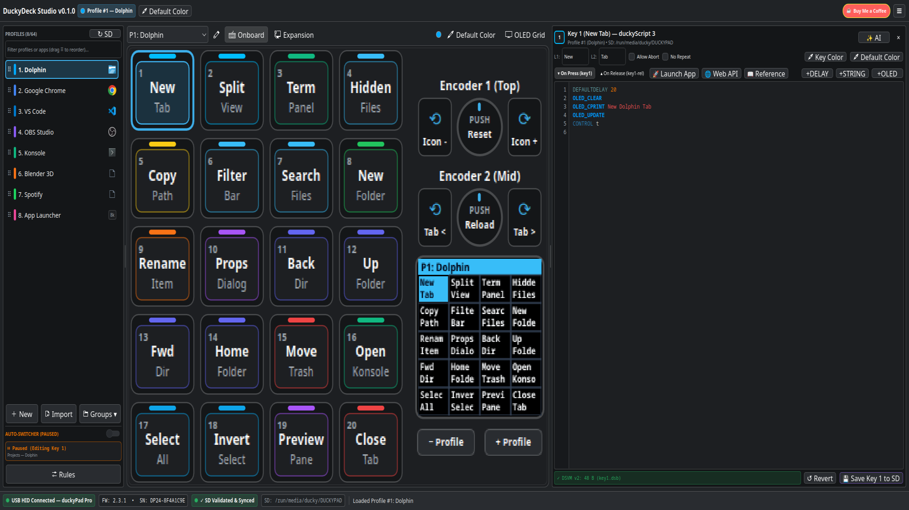
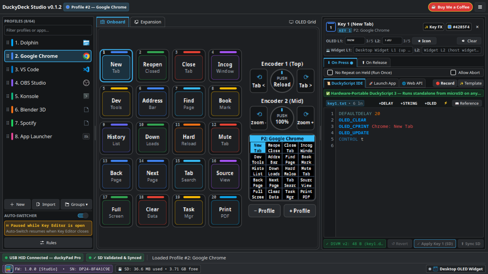
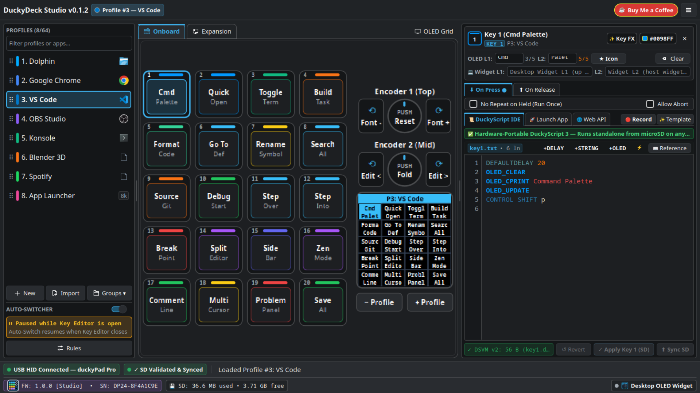
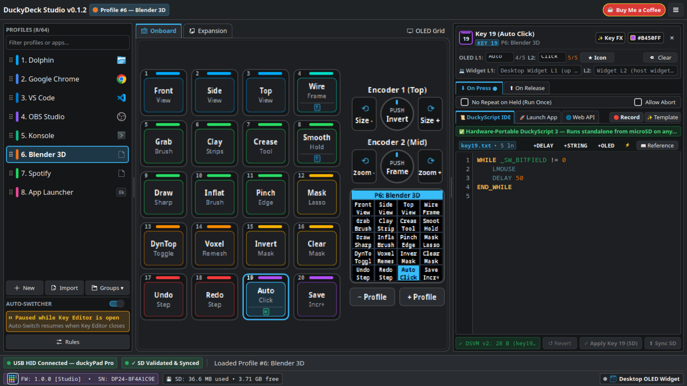
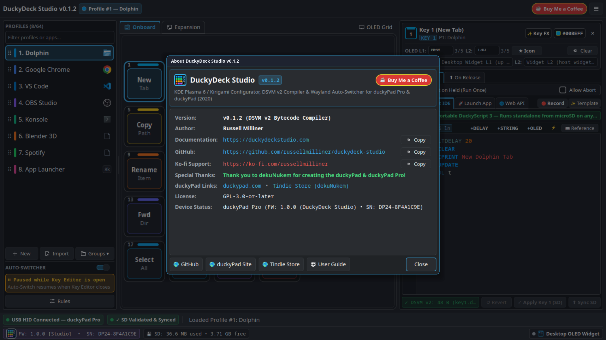

Configure, Compile & Automate Your duckyPad — Without Compromises
DuckyDeck Studio (v0.1.13) is an all-in-one native desktop configurator, DSVM v2 bytecode compiler,
Active-Window Auto-Switcher, and Smart Home / Host Automation Engine built in Rust & Qt 6—paired with optional
Custom Firmware v1.1.2 unlocking 204 monochrome pixel-art OLED icons, 4-way screen rotation, and 60 FPS hardware LED fades.
100% compatible with existing microSD cards, .dsb scripts & dekuNukem profiles •
GitHub Repository •
☕ Support on Ko-fi
What Is DuckyDeck Studio?
Created as a modern, single-binary replacement for the legacy Python Tkinter configurator and separate auto-switcher scripts, DuckyDeck Studio unites hardware programming and desktop automation in one fast native workspace.
🎹 Visual Hardware Canvas & IDE
Interactive 4×5 RGB key matrix, dual rotary encoders, 32-channel expansion view, live 128×128 OLED simulator, and a built-in duckyScript 3 → DSVM v2 compiler with real-time syntax checking.
🖼️ 204 Color & Monochrome Icons
Assign icons from 14 categories (Browsers, Word, Excel, PowerPoint, Photoshop, FreeCAD/Fusion 360, Home Automation, Dev, Media). Displays in color on your PC and crisp 1-bit pixel art on the physical OLED.
🪟 Native Window Auto-Switcher
Automatically switches duckyPad profiles when you focus different apps or browser tabs on Windows 10/11 (Win32) and Linux (KDE Plasma 6 Wayland D-Bus), with a 1-click crosshair window picker.
🚀 Host Launcher, Webhooks & HA
Launch desktop apps (.lnk / .desktop), trigger HTTP webhooks, and toggle Home Assistant entities directly over USB HID (_GV31) without burning keyboard shortcuts.
How Is It Different From the Standard Configurator & Firmware?
DuckyDeck Studio works out-of-the-box with stock DPP_FW firmware, and pairs with optional DuckyDeck Studio Firmware (DDS_FW v1.1.2) for hardware capabilities beyond standard firmware 3.3.5.
| Capability | Standard Setup (Python Configurator + Stock FW 3.3.5) |
DuckyDeck Studio (v0.1.13) + Custom Firmware (DDS_FW v1.1.2) |
|---|---|---|
| Desktop Architecture | Separate Python 3 / Tkinter configurator + separate duckypad_autoprofile.py background script. |
✅ Single Native Rust + Qt 6 Application on Windows 10/11 (.exe) & Linux (Flatpak) with integrated System Tray daemon and zero Python dependencies. |
| OLED Key Icons & Labels | ASCII characters only (0x20..0x7E, max 5 chars/line); emoji or Unicode symbols are stripped or corrupt multi-byte boundaries. |
✅ 204 Built-In Icons (Color UI + 1-Bit Monochrome Bitmaps): Renders full-cell 16×16 icons, 10×10 top-icon + text captions, and inline glyphs on the hardware OLED while writing 4-char ASCII fallbacks for stock FW compatibility. |
| OLED Screen Orientations | 2 orientations only: 0° Portrait and 90° Clockwise Landscape. |
✅ Full 4-Way Rotation (0°, 90°, 180°, 270°) on both the physical OLED screen and the floating Desktop OLED Companion Widget. |
| Active-Window Auto-Switcher | Requires running a separate Python app; limited Wayland support on modern Linux desktops. | ✅ Built-In Cross-Platform Auto-Switcher: Native Win32 foreground tracking on Windows 10/11 & KWin Wayland D-Bus on Linux, regex title matching, crosshair window picker, and protected Fallback Profile. |
| Launching Apps & Smart Home Control | Must type OS shortcut combos (e.g., GUI r) that can collide with active applications or games. |
✅ Zero-Conflict USB HID Triggers (_GV31): Launch apps from Start Menu / XDG, fire HTTP/JSON webhooks, and browse/toggle Home Assistant entities directly. |
| Hardware LED Transitions & OLED Speed | Stepwise RGB jumps only (SWC_SET); full 1024-byte SPI screen redraws; SD card FAT32 file writes on every profile switch (20–200 ms stall). |
✅ Hardware 60 FPS SWC_FADE_TO Opcode (89), SSD1306 SPI DMA dirty-page tracking, sub-ms USB HID spin-retry, and instant ESP32 NVS flash wear-leveling profile cache. |
| Remote Control & Automation API | HID serial commands only. | ✅ Embedded HTTP REST API Server (/api/v1/*) with Bearer auth & OpenAPI 3.0.3 spec, plus outbound per-profile and global Profile Change Webhooks. |
📚 Documentation & Reference Area
Everything is organized into dedicated, fast-loading reference pages:
📖 User Manual & Guide
Step-by-step installation for Windows 10/11 & Linux, 3-column workspace tour, profile templates, DuckyScript 3 IDE, App Launcher, Webhooks, and Auto-Switcher setup.
🖼️ OLED Icon Library (204)
Interactive, searchable catalog of all 204 icons across 15 categories showing side-by-side Color Desktop UI and 1-Bit Monochrome (16×16 & 10×10) bitmaps.
🔌 HTTP REST API Reference
Complete documentation for the built-in /api/v1/* HTTP server, Bearer token security, Home Assistant / webhook payloads, and OpenAPI / Swagger specs.
🏗️ System Architecture
Deep-dive engineering reference covering the Rust + CXX-Qt 0.7 bridge, USB HID/MSC protocol, DSVM v2 bytecode compiler, and DDS_FW v1.1.2 internals.
🎬 Video Tour & Application Screenshots
Watch the 1080p walkthrough video or click any screenshot below to inspect the interface in full resolution.








